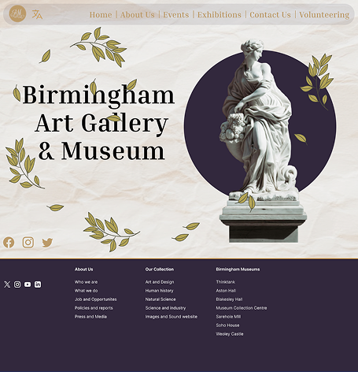
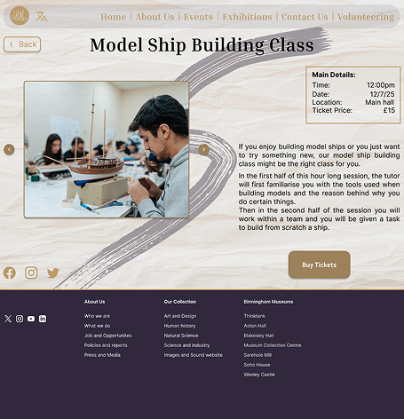
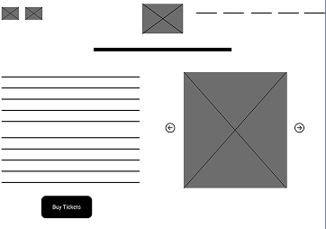
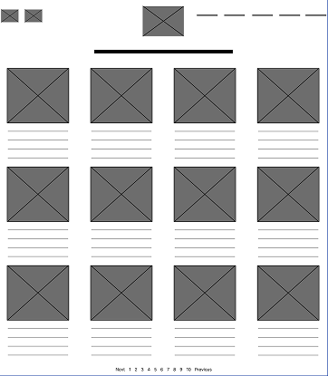
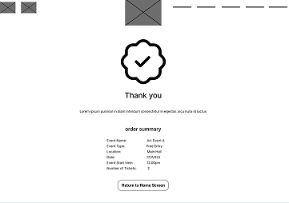
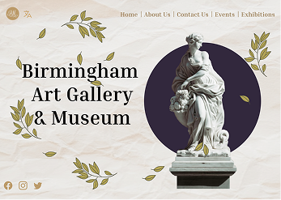
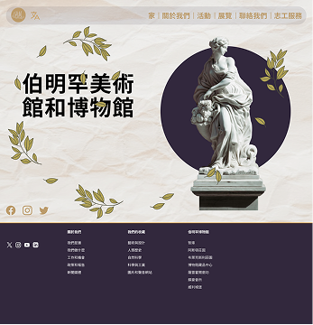
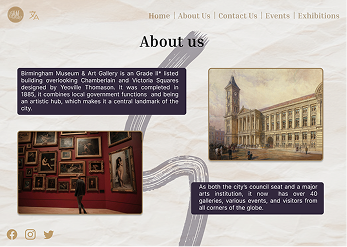
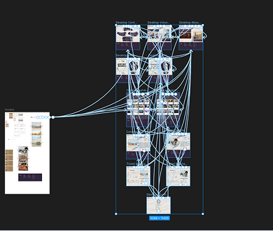

WORK
 CASE STUDY
CASE STUDY
Scroll to see the work and the thought behind it.

This project involved creating a desktop version of the mobile app for the Birmingham Museum & Art Gallery.
Designing a desktop version of the mobile app everyone can understand.

THE
CHALLENGE
How might we create a desktop version that feels consistent with the mobile app?
There isn’t a desktop version of the app, so releasing it would mean users could only access it on their mobile phones.
Create a streamlined desktop website that is simple to use and provides a similar user experience to the mobile app.
WIREFRAMES
PROTOTYPES
From digital wireframes to a testable low-fidelity prototype
The aim throughout was to keep every screen plain and easy to understand, so users could explore the website rather than learn how to use it.

This event/exhibition details screen shows an image representing the event or exhibition, along with a description of the event or exhibition and a CTA for purchasing a ticket.

This wireframe shows the screen where users can browse the exhibitions and events that the museum offers.

This confirmation screen appears after users book tickets for an event or exhibition. It summarises the details they need, including the event or exhibition times and date or other relevant booking information.

Low-fidelity prototype
This user flow shows how a visitor would purchase tickets for events and exhibitions using the app.
View the low-fidelity prototype in Figma → (opens Figma in a new tab)
REFINING
THE
SYSTEM
Mock-ups and a high-fidelity prototype.

This is the mock-up for the home screen, initially the screen was quite empty so the leaves were added to fill space and make the screen look more visually interesting.

This is the final home screen for the Mandarin version of the website, shown when the user switches languages.

This is the mock-up for the about us screen. This screen turned out well, as I didn’t need to add any additional elements that weren’t found in the mobile version of this screen.
High-fidelity prototype
FULL FLOW PROTOTYPED IN FIGMA
The full desktop flow was built out in Figma, covering the homepage, exhibitions, events, ticket purchase, and contact pages.
View the high-fidelity prototype → (opens Figma in a new tab)
TAKEAWAYS
NEXT STEPS
“Trying to make a desktop version wasn’t as easy as I thought it would be.”
I believe that if I were to start this project again, I would make the desktop version first rather than the mobile version. Starting with the mobile app meant working out how to fill all the extra space on desktop, which I found difficult. If I had started with the desktop app, I would have just removed elements when needed and reduced the size of the components for mobile, which I believe would have been easier for me personally.
NEXT ITERATION ROADMAP
01Build the desktop screens in the other supported languages and test the multilingual feature end to end, to confirm the website still works as intended in every supported language.